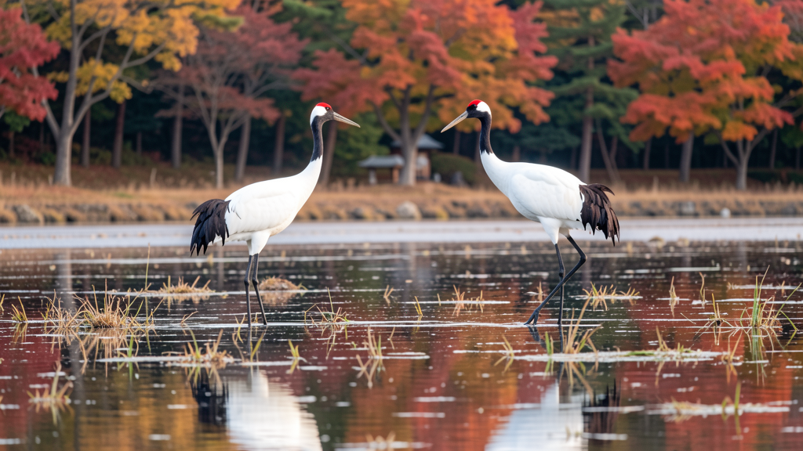

Scientific name: Grus japonensis · Habitat: Hokkaido, Japan and wetlands of East Asia · Diet: Aquatic plants, insects, fish, frogs · Fun fact: Red-crowned cranes perform elaborate, synchronized dances as part of their courtship — leaping, bowing, and tossing sticks. In Japanese culture they are a symbol of longevity, peace, and good fortune. They mate for life and are considered a powerful symbol of grace and fidelity.
Quick recall — do you remember these from Lesson 4?
iridescent · ir-ih-DES-ənt · — "The ruby-throat's feathers were iridescent — shifting from emerald to ruby."
territorial · ter-ih-TOR-ee-əl · — "A single male hummingbird can be territorial over a dozen flowers."
diminutive · dih-MIN-yuh-tiv · — "The bee hummingbird holds the title of the world's diminutive avian species."
flash of colour · — "A flash of colour streaked past the feeder and was gone."
defend one's ground · — "The hummingbird defended its ground against a jay ten times its size."
| 🎵 Music: | The pianist played the Chopin étude with a grace that belied her years of gruelling practice. |
| 💼 Work: | She exited the negotiation with grace — no recriminations, no hard feelings, just a quiet acknowledgment that the deal was not meant to be. |
| ❤️ Personal: | He handled the betrayal with grace — he never spoke of it publicly and never let it change who he was. |
| 🏛️ History: | The symmetry of the Parthenon's façade — every column, every proportion — was designed to express divine order. |
| 🔬 Science: | Physicists are fascinated by the symmetry of crystal lattices — repeating patterns that extend infinitely in every direction. |
| 💼 Work: | The architect redesigned the floor plan with symmetry in mind — two identical wings flanking a central atrium. |
| ❤️ Personal: | After twenty years of marriage, their fidelity to each other remained — not as passion, but as quiet, daily devotion. |
| 💼 Work: | The editor was known for her fidelity to the original text — she refused to change a single word of the author's intent. |
| 🎵 Music: | The recording was praised for its fidelity to the live performance — every nuance of the concert hall captured. |
| 🎓 Education: | She described quitting her stable job to study theatre as the biggest leap of faith of her life. |
| 💼 Work: | Investing their savings into the startup was a leap of faith — there was no guarantee the market would materialise. |
| 💼 Work: | The CEO showed grace under pressure when the product launch failed publicly — she took responsibility, thanked the team, and outlined the next step. |
| ❤️ Personal: | He showed grace under pressure when the hospital called about his father — he asked clear questions, made decisions, and only allowed himself to break down after hanging up. |
Q1–Q3 are from Lesson 5. Q4–Q5 review Lesson 4. Click any answer — green = correct, red = wrong.
Q1 (Lesson 5). The diplomat conducted the entire crisis negotiation with _____ — never raising his voice, never betraying a hint of frustration.
Q2 (Lesson 5). The Japanese garden was designed with perfect _____ — the left side of the pond mirroring the right in every detail.
Q3 (Lesson 5). The translation was praised for its _____ to the original — not a single idiom softened, not one metaphor changed.
Q4 (Review — Lesson 4). The senior partner grew _____ about the client relationships, refusing to let anyone else in the room during the pitch.
Q5 (Review — Lesson 4). The kingfisher appeared as a _____ — electric blue — before diving into the stream and surfacing with a fish.